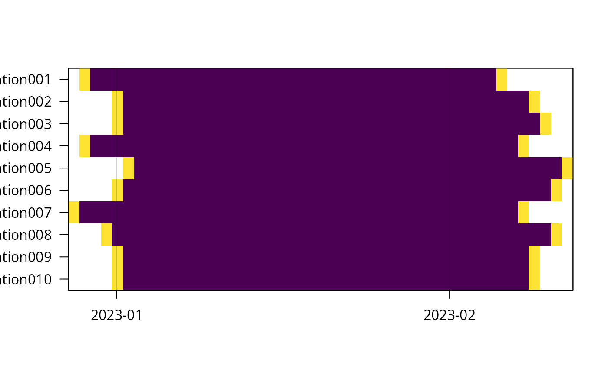
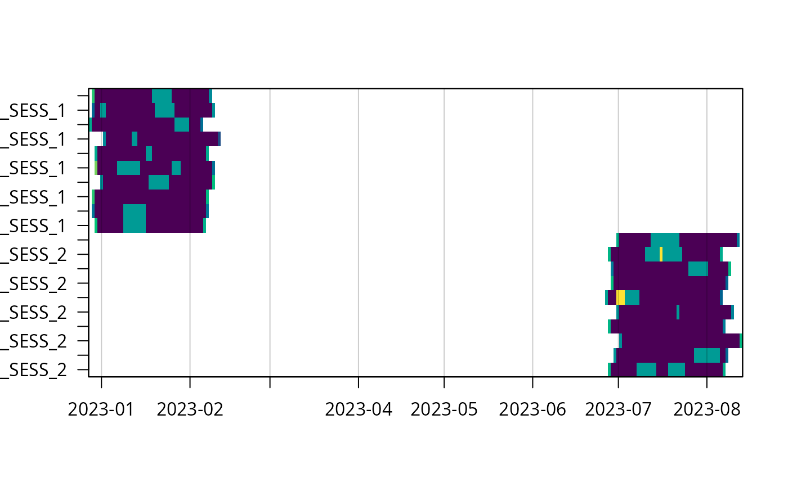

Generates simulated camera trap data and a corresponding species record table.
The output mimics the structure required by camtrapR, making it useful
for creating reproducible examples, testing pipelines, and demonstrating
package functionality.
simulateCamtrapData(
nStations = 10,
camerasPerStation = 1,
duration_days = 40,
nSeasons = 1,
nSpecies = 8,
nRecords = 300,
startDate = "2023-01-01",
probProblem = 0,
bbox = c(xmin = 117.25, xmax = 117.5, ymin = 5.3, ymax = 5.5),
covariates = list(continuous = list(elev = c(1000, 200)), categorical = list(habitat =
3)),
dateFormat = "ymd",
seed = NULL
)Integer. The number of camera trap stations to simulate. Default is 10.
Integer (1 or 2). Number of cameras per station. If 2,
a Camera column is generated to distinguish between devices at the same station. Default is 1.
Numeric. The average deployment duration in days. Actual durations will have slight random jitter. Default is 40.
Integer. The number of seasons to simulate. If > 1, deployments are staggered by 180 days. Default is 1.
Integer. The total number of distinct species to simulate. Default is 8.
Integer. The total number of species records (images/events) to distribute across the active deployments. Default is 200.
Character. The base start date for the first season's deployments, in "YYYY-MM-DD" format. Default is "2023-01-01".
Numeric (0 to 1). The probability that a camera experiences
a malfunction, triggering Problem1_from and Problem1_to dates. Default is 0 (no problems).
Numeric vector of length 4. Bounding box c(xmin, xmax, ymin, ymax)
used to generate random deployment coordinates in decimal degrees.
List. Specifies the covariates to simulate. Must contain continuous
(a named list of c(mean, sd)) and/or categorical (a named list specifying
the number of factor levels).
Character. A lubridate-style format string specifying how
Setup_date and Retrieval_date should be formatted (e.g., "ymd",
"dmy HMS", "mdy").
Numeric. A seed for the random number generator to ensure reproducible output.
A list containing two data.frames:
camtrapsDeployment metadata including Station, Camera (optional), Season (optional), longitude, latitude, Setup/Retrieval dates, Problem dates, and covariates.
recordTableSimulated species record table including Station, Camera (optional), Season (optional), Species, and strictly formatted DateTimeOriginal, Date, and Time columns.
The function simulates realistic deployment metadata and species detections.
Species abundances are generated using a skewed, Zipf-like (harmonic) distribution,
ensuring a realistic mix of common and rare species. Detection times are drawn uniformly
across the active deployment periods. If probProblem > 0, a subset of
cameras will simulate a single malfunction period (Problem1_from and Problem1_to).
Cameras are set up and retrieved in the daytime.
Note: The initial draft of this function was generated with the assistance of an AI language model and subsequently modified.
# Simulate basic data (10 stations, 1 camera each, 1 season)
camera_data_simple <- simulateCamtrapData()
camop_simple <- cameraOperation(camera_data_simple$camtraps,
setupCol = "Setup_date",
retrievalCol = "Retrieval_date")
plot(camop_simple)

head(camera_data_simple$camtraps)
#> Camera table with 6 stations in 6 rows:
#> # A tibble: 6 × 7
#> Station longitude latitude Setup_date Retrieval_date elev habitat
#> <chr> <dbl> <dbl> <chr> <chr> <dbl> <chr>
#> 1 Station001 117. 5.47 2022-12-30 2023-02-06 1187. habitat_2
#> 2 Station002 117. 5.33 2023-01-02 2023-02-09 1035. habitat_2
#> 3 Station003 117. 5.31 2023-01-02 2023-02-10 1049. habitat_1
#> 4 Station004 117. 5.36 2022-12-30 2023-02-08 1325. habitat_3
#> 5 Station005 117. 5.38 2023-01-03 2023-02-12 1022. habitat_2
#> 6 Station006 117. 5.34 2023-01-02 2023-02-11 973. habitat_2
head(camera_data_simple$recordTable)
#> Record table based on 1 station and 6 records of a total of 2 species:
#> # A tibble: 6 × 5
#> Station Species DateTimeOriginal Date Time
#> <chr> <chr> <chr> <chr> <chr>
#> 1 Station001 Sp_01 2022-12-31 21:43:55 2022-12-31 21:43:55
#> 2 Station001 Sp_01 2023-01-02 09:10:09 2023-01-02 09:10:09
#> 3 Station001 Sp_01 2023-01-02 14:47:08 2023-01-02 14:47:08
#> 4 Station001 Sp_06 2023-01-05 21:57:05 2023-01-05 21:57:05
#> 5 Station001 Sp_01 2023-01-06 13:33:55 2023-01-06 13:33:55
#> 6 Station001 Sp_01 2023-01-07 13:58:01 2023-01-07 13:58:01
# Simulate multi-season, multi-camera data with custom covariates
# and camera malfuncion (problem columns)
camera_data_complex <- simulateCamtrapData(
nStations = 10,
camerasPerStation = 2,
nSeasons = 2,
dateFormat = "ymd HMS",
covariates = list(continuous = list(elevation = c(500, 50)),
categorical = list(treatment = 2)),
probProblem = 0.5
)
camop_complex <- cameraOperation(camera_data_complex$camtraps,
setupCol = "Setup_date",
retrievalCol = "Retrieval_date",
sessionCol = "Season",
cameraCol = "Camera",
hasProblems = TRUE,
byCamera = FALSE,
allCamsOn = FALSE,
camerasIndependent = FALSE, # this is made up, not simulated
dateFormat = "ymd HMS")
summary(camop_complex)
#> === Camera Trap Station Operation Summary ===
#>
#> SURVEY SPECIFICATION
#> Station column: Station
#> Session column: Season
#> Setup column: Setup_date
#> Retrieval column: Retrieval_date
#>
#> PERIOD
#> From: 2022-12-29
#> To: 2023-08-13
#>
#> DIMENSIONS
#> Stations: 10
#> Sessions: 2
#> Days: 228
#>
#> EFFORT
#> Active days: 94 out of 228 days (at least 1 station active)
#> Active trap-days: 739.9 (sum of effort across all stations and days)
#> Problem trap-days: 4 (0.1% of 4560 station-days)
#> Not set up trap-days: 3738 (82.0% of 4560 station-days)
#>
#> STATION-LEVEL SUMMARY
#> Station Session Monitored Active Problem
#> -----------------------------------------------------
#> Station001 1 42 37.4 0
#> Station002 1 43 37.7 0
#> Station003 1 40 36.6 0
#> Station004 1 41 39.3 0
#> Station005 1 40 37.8 0
#> Station006 1 42 35.4 0
#> Station007 1 40 35.4 0
#> Station008 1 41 39.6 0
#> Station009 1 41 36.3 0
#> Station010 1 39 33.7 0
#>
#> ... 10 more row(s) not shown (use `summary(nStationsMax = ...)` to see more)
#>
#>
plot(camop_complex)
